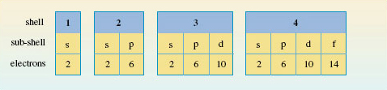

1.7.1 Energy levels in atoms
In this section you will start to look at how electrons are arranged in atoms.
Recall electrons are arranged around the nucleus in regions of space where the probability of finding them is relatively high, and where over an extended period, they spend most of their time.
These regions of space are known as shells, and you can think of them as the main energy levels of an atom.
Shells are numbered 1, 2, 3 etc. starting from 1, which has the lowest energy and is nearest the nucleus. This number is called the principal quantum number, and is given the symbol n.
But that’s not the end of the story.
With the exception of the lowest energy level (n=1), shells are divided into sub-shells (or sub-levels of energy), and each sub-shell is specified by a second quantum number l. This is also known as the orbital quantum number, or the angular momentum quantum number.
So how are n and l related?
For each shell of principle quantum number n, l can take integer values from zero up to (n-1).
How many subshells are there in a shell having principle quantum number 3? Assign an l value to each sub-shell.
Answer
There are 3, which take values l= 0, 1 and 2.
An alternative way of specifying sub-shells uses letters in place of the quantum number l.
The following letters are used:
- s for subshells with l=0
- p for subshells with l=1
- d for subshells with l=2
- f for subshells with l=3
So in the previous question, the 3 sub-shells in the n = 3 energy level are: 3s, 3p and 3d.
What sub-shells are found in the shell having principal quantum number, n = 4?
Answer
4s, 4p, 4d and 4f.
Now, up to this point electrons, haven’t been considered.
Electrons, the number of which is indicated by the atomic number of the atom concerned, occupy the energy levels of an atom.
But which shells and therefore subshells do they go into, and how many go into each?
There is in fact an upper limit on the number of electrons that each kind of sub-shell can hold. For s, p, d and f sub-shells, there can be no more than 2, 6, 10 and 14 electrons respectively.
This, together with the other ‘rules’ you’ve met so far are summarised in Figure 6.

OpenLearn - Discovering chemistry
 Except for third party materials and otherwise, this content is made available under a Creative Commons Attribution-NonCommercial-ShareAlike 4.0 Licence, full copyright detail can be found in the acknowledgements section. Please see full copyright statement for details.
Except for third party materials and otherwise, this content is made available under a Creative Commons Attribution-NonCommercial-ShareAlike 4.0 Licence, full copyright detail can be found in the acknowledgements section. Please see full copyright statement for details.